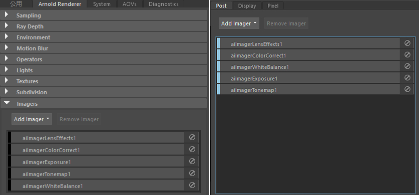
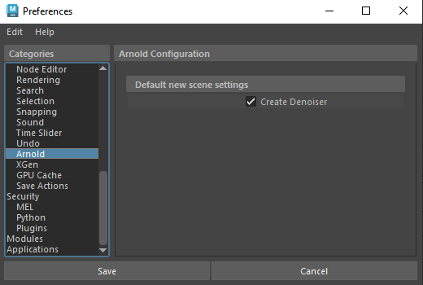

成像器
 请参见《Arnold 用户手册》中的成像器
请参见《Arnold 用户手册》中的成像器

“渲染设置”(Render Settings)中的成像器 （左）。Arnold“渲染视图”(Render View)窗口中“后期”(Post)选项卡中的成像器 （右）。
名为成像器的后期处理节点在输出驱动程序之前对像素进行操作。成像器可以链接在一起。
重要信息：
Intel® Open Image Denoiser (OIDN) 成像器已默认添加到新场景中（现有场景将保持不变）。这可以在“Maya 首选项”(Maya Preferences)的 Arnold 设置中禁用。

Arnold 的“创建降噪器”(Create Denoiser) 选项位于“Maya 首选项”(Maya Preferences)中
注意：
已知限制：
- 当前，在添加新成像器时，Arnold 会刷新 IPR。因此，建议在启动 IPR 会话之前添加成像器。
- 如果后期处理在图像中引入了新特性（例如：光晕），则应该在应用后期处理成像器之前应用降噪器成像器。
- 您应该在应用任何降噪器成像器之前应用 imager_light_mixer，因为灯光 AOV 不一定会被降噪器降噪。
- 将成像器输出写入单独的 AOV 仅在多层 Arnold 驱动程序（例如 EXR）中和渲染到图像查看器时可用，但单层 Arnold 驱动程序（例如 jpeg、png 等）不支持。
提供以下后期处理成像器：
- imager_arnold_denoiser
- imager_color_correct
- imager_color_curves
- imager_denoiser_oidn
- imager_denoiser_optix
- imager_exposure
- imager_lens_effects
- imager_light_mixer
- imager_overlay
- imager_tonemap
- imager_white_balance
注意：
要观看成像器的简介视频，请单击此处。无法将 Maya 节点或其他 MtoA 着色器连接到成像器。
有关演示如何使用 imager_light_mixer 的场景，请单击此处。